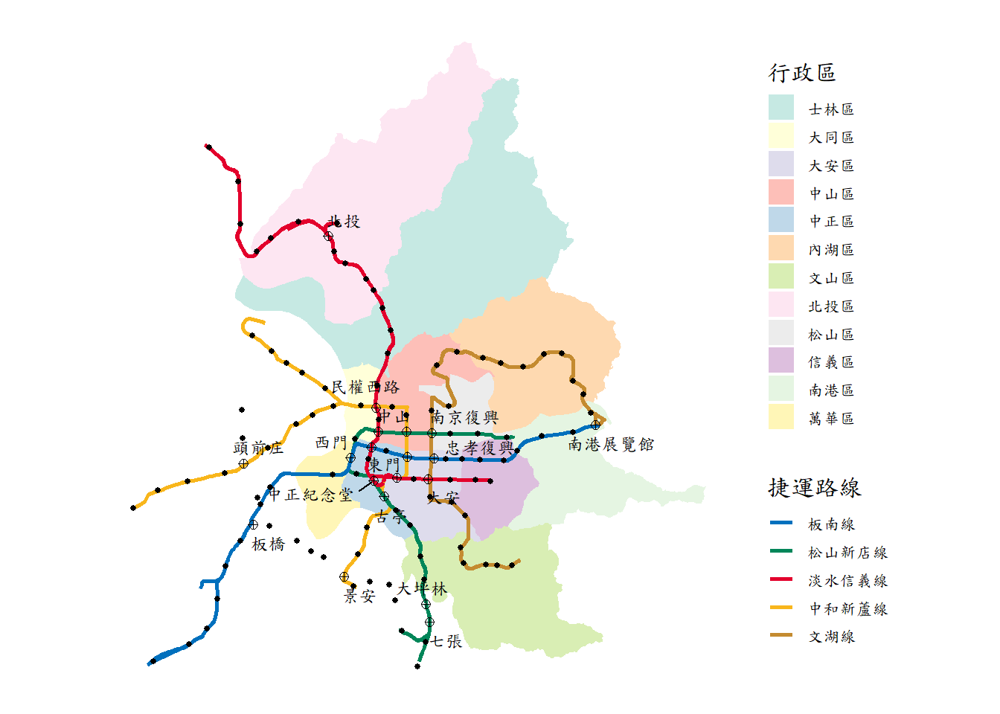

Chapter 3 Data Visualization with Maps
When it comes to Big Data, a massive amounts of information may cross our mind. How to process on the big data and to produce a neat summary is a vital issue nowadays, and so is the “Geospatial Big Data.” Data visualization with maps is one of the methods, which summarizes the huge data with geometry features.
The basic features of GIS is to make the maps!! But a map with only the geometric information may sound tedious. To display a map much more interestingly and interactively, we should combine the geometric features with its attributes. With the data joined, we can make the heat map, hypsometric map and so forth to make the attributes visualized.
In this section, we would go through the basic command on making maps, and then have a better knowing on the skills to label on the layers. Finally, briefly learn how to make the graduated, categorized, rule-based symbology map.
3.1 Making Maps
For the beginners, making map would give us a quick view and better understanding on how R can be used as GIS. It can be done simply by the function ggplot() in ggplot2 package.
The gg in ggplot2 means Grammar of Graphics, a graphic concept which describes plots by using a “grammar.” ggplot() is used to construct the initial plot object, and is followed by + to add component to the plot. To make the map, we should also follow this grammar.
The following two code represent how to draw United States Map by the ggplot grammar. ggplot() means the initialization of drawing, while geom_sf() informs the function ggplot() to make the map. The data can be either put in the code ggplot() or in geom_sf().
Note that “us_states” is an example data originally attached in spData package. Please install the packages “spData” and access the library before using the data.
install.packages("spData")
library(spData)ggplot(data=us_states)+
geom_sf()ggplot()+
geom_sf(data=us_states)Two codes above can plot the same map as shown. And from this simple work, we may find out that making a map may be much easier and flexible than the desktop GIS (e.g., QGIS, ArcGIS), since it can produce map by standard and readable language.
3.2 Attributes of Shapefile
Notably, the class of “us_states” is “sf” (simple features) as well as “data.frame.” The simple features do not only store the geometric information, but the attributes of each features.
class(us_states)## [1] "sf" "data.frame"Now, we know how to make a map in R. But if we want to make visualized map, it is better for us to take a closer look on the shapefile first. Take “us_states” for instance.
us_states## Simple feature collection with 49 features and 6 fields
## Geometry type: MULTIPOLYGON
## Dimension: XY
## Bounding box: xmin: -124.7042 ymin: 24.55868 xmax: -66.9824 ymax: 49.38436
## Geodetic CRS: NAD83
## First 10 features:
## GEOID NAME REGION AREA total_pop_10 total_pop_15
## 1 01 Alabama South 133709.27 [km^2] 4712651 4830620
## 2 04 Arizona West 295281.25 [km^2] 6246816 6641928
## 3 08 Colorado West 269573.06 [km^2] 4887061 5278906
## 4 09 Connecticut Norteast 12976.59 [km^2] 3545837 3593222
## 5 12 Florida South 151052.01 [km^2] 18511620 19645772
## 6 13 Georgia South 152725.21 [km^2] 9468815 10006693
## 7 16 Idaho West 216512.66 [km^2] 1526797 1616547
## 8 18 Indiana Midwest 93648.40 [km^2] 6417398 6568645
## 9 20 Kansas Midwest 213037.08 [km^2] 2809329 2892987
## 10 22 Louisiana South 122345.76 [km^2] 4429940 4625253
## geometry
## 1 MULTIPOLYGON (((-88.20006 3...
## 2 MULTIPOLYGON (((-114.7196 3...
## 3 MULTIPOLYGON (((-109.0501 4...
## 4 MULTIPOLYGON (((-73.48731 4...
## 5 MULTIPOLYGON (((-81.81169 2...
## 6 MULTIPOLYGON (((-85.60516 3...
## 7 MULTIPOLYGON (((-116.916 45...
## 8 MULTIPOLYGON (((-87.52404 4...
## 9 MULTIPOLYGON (((-102.0517 4...
## 10 MULTIPOLYGON (((-92.01783 2...There are 49 features and 6 fields (attributes) in “us_states” data, that is, 49 rows (the 50 states except for Hawaii) and 6 columns in a table. However, we may find that there are actually 7 columns existing in the table above. It is because that the last column of this table stores the geometry of this shapefile. The “geometry” column is recorded in the form of “Well-Known Text (WKT).”
It is allowed to apply basic command of R on the “sf” data. For instance, if we want to observe all the names in “us_states,” plus “$” behind the name of data, and then type on the column name.
## Output the name of us_states by "$"
us_states$NAME## [1] "Alabama" "Arizona" "Colorado"
## [4] "Connecticut" "Florida" "Georgia"
## [7] "Idaho" "Indiana" "Kansas"
## [10] "Louisiana" "Massachusetts" "Minnesota"
## [13] "Missouri" "Montana" "Nevada"
## [16] "New Jersey" "New York" "North Dakota"
## [19] "Oklahoma" "Pennsylvania" "South Carolina"
## [22] "South Dakota" "Texas" "Vermont"
## [25] "West Virginia" "Arkansas" "California"
## [28] "Delaware" "District of Columbia" "Illinois"
## [31] "Iowa" "Kentucky" "Maine"
## [34] "Maryland" "Michigan" "Mississippi"
## [37] "Nebraska" "New Hampshire" "New Mexico"
## [40] "North Carolina" "Ohio" "Oregon"
## [43] "Rhode Island" "Tennessee" "Utah"
## [46] "Virginia" "Washington" "Wisconsin"
## [49] "Wyoming"Or, we can use the concept of matrix to derive the desired columns and rows.
## Output the name and region of us_states by "[,]"
us_states[,c("NAME","REGION")] # Put the name of column directly## Output the name and region of us_states by "[,]"
us_states[,c(2,3)] # NAME is stored in the second column## Simple feature collection with 49 features and 2 fields
## Geometry type: MULTIPOLYGON
## Dimension: XY
## Bounding box: xmin: -124.7042 ymin: 24.55868 xmax: -66.9824 ymax: 49.38436
## Geodetic CRS: NAD83
## First 10 features:
## NAME REGION geometry
## 1 Alabama South MULTIPOLYGON (((-88.20006 3...
## 2 Arizona West MULTIPOLYGON (((-114.7196 3...
## 3 Colorado West MULTIPOLYGON (((-109.0501 4...
## 4 Connecticut Norteast MULTIPOLYGON (((-73.48731 4...
## 5 Florida South MULTIPOLYGON (((-81.81169 2...
## 6 Georgia South MULTIPOLYGON (((-85.60516 3...
## 7 Idaho West MULTIPOLYGON (((-116.916 45...
## 8 Indiana Midwest MULTIPOLYGON (((-87.52404 4...
## 9 Kansas Midwest MULTIPOLYGON (((-102.0517 4...
## 10 Louisiana South MULTIPOLYGON (((-92.01783 2...## Output the attributes of first row
us_states[1,]## Simple feature collection with 1 feature and 6 fields
## Geometry type: MULTIPOLYGON
## Dimension: XY
## Bounding box: xmin: -88.47323 ymin: 30.24971 xmax: -84.89184 ymax: 35.00803
## Geodetic CRS: NAD83
## GEOID NAME REGION AREA total_pop_10 total_pop_15
## 1 01 Alabama South 133709.3 [km^2] 4712651 4830620
## geometry
## 1 MULTIPOLYGON (((-88.20006 3...In addition, with the characteristic of “data.frame,” we can easily manipulate data by the package dplyr. It would be further discussed in the following section.
3.3 Labels on Map
Sometimes we need to label on the map to inform the name or attribute of specific places. To do so, the command geom_sf_text() should be appended after the geom_sf(), to inform which column is going to be labeled. The code illustrated below is the map of US states with thier names labelled on.
ggplot(us_states)+
geom_sf()+
geom_sf_text(aes(label=NAME))## Warning in st_point_on_surface.sfc(data$geometry): st_point_on_surface may not
## give correct results for longitude/latitude dataIn function geom_sf_text(), aes() represents aesthetic mappings, which defines the coordinates of each label. The attributes we want to label is followed by label=.
However, something awkward occurs. The text is overlapping with each other when the labels are dense. To solve this problem, install the package ggsflabel from GitHub. (Note that ggsflabel has not been released on CRAN, which is a global network that store versions of documentation for R. We should download it from GitHub!!)
* If you want to learn more on the reason why install from GitHub and how devtools works, please click here.
install.packages("devtools")
devtools::install_github("yutannihilation/ggsflabel")
library(ggsflabel)With this package, the overlapping text would be eliminated, and make the map clear and readable.
ggplot(us_states)+
geom_sf()+
geom_sf_text_repel(aes(label=NAME), nudge_y=0.5, size=3, color="red")## Warning in st_point_on_surface.sfc(data$geometry): st_point_on_surface may not
## give correct results for longitude/latitude dataIn function geom_sf_text() and geom_sf_text_repel(), nudge_x and nudge_y shift the label horizontally and vertically respectively in order to make the maps more visualizable.
Also, if we want to change the color or size of the text, just revise the variable in geom_sf_text() or geom_sf_text_repel(): color=, size=. Common colors can be directly given as the name of color, for instance, color="red". Other colors can be used by typing its Color Code, such as color="#2894FF".
3.4 Graduated Symbol Map
Graduated symbol map is a map that change in color or size according to the value of the attribute they represent. The data type of the particular value should be numeric and continuous. Graduated symbol map can be applied widely, for instance, denser populations might be represented by larger dots or darker polygon.
Let’s take “us_states” data for example again. There are two columns representing population (total_pop_10, total_pop_15) in the data. What if we want to make a graduated symbol map with population of each states?
First, let us learn how to alter the color and size of the map. To do so, we just need to set up the parameters in geom_sf(). The parameter and feature of geom_sf() are summarized in the table below.
| Parameter | Features |
|---|---|
| size | identify the size of point, line, polyon |
| color | identify the color of point and line |
| fill | identify the color of polygon |
The following code fills “us_states” polygon blue, and make the red and thicker border.
ggplot(us_states)+
geom_sf(fill="blue", size=3, color="red")Graduated symbol map does not assign a specific color to each geometry features. Thus, the partameter in geom_sf() should not be a fixed value or color. Instead, the parameters(size, color, fill) should be based on the value of attribute, that is Parameter=Attribute. The following code and map are the example of how to make a graduated symbol map based on the population of each US states.
ggplot(us_states)+
geom_sf(aes(fill=total_pop_10))Simply add the code aes(fill=total_pop_10) inside geom_sf(), it produces the graduated symbol map based on the value of population. Here, aes() defines the coordinate of the filled polygon. fill defines which attribute should be based on.
But the map is somehow weird. In common, area with high population should be filled with dark color as expected. The result above are the total opposite. Thus, we need other functions to re-define the color.
scale_fill_continuous() is appended after geom_sf(). It is used to define the color of continuous data for filling the polygon. scale_color_continuous() do the same thing, but coloring the point or line. In these functions, two major parameters should be set. One is low=, representing the color given to the lowest value in the data; the other is high=, representing the color given for highest value.
In “us_states” example, since the data is continuous and the objective is polygon, we should apply the function scale_fill_continuous(). The code and figure are shown as follows.
ggplot(us_states)+
geom_sf(aes(fill=total_pop_15))+
scale_fill_continuous(low="#D2E9FF", high="#003D79")3.5 Categorized Symbol Map
Categorized map is similar to graduated map, but it is used on the discrete data. It is widely used to the geometric data which has been classified in advance. For instance, the region of states, the type of schools (elementary, junior high, senior high, university,…), the classification of highways (expressway, freeway,…), and so forth.
Take “us_states” data for example. A column named “REGION” represents the region of each states. We can fill the same region with consistent color. Similar to graduated map, the parameters(size, color, fill) should be based on the classification of attribute, that is Parameter=Attribute. The code and result are as the followings.
ggplot(us_states)+
geom_sf(aes(fill=REGION))It seems to be as simple as the graduated map. But what if we want to adjust the color manually?
scale_fill_manual() or scale_color_manual() is appended after geom_sf(). They are used to adjust the color of polygon and “point or line” respectively. In these functions, parameter values= should be set up. It is used to define the color of each classifications. The pseudocode is as follows. values=c("Classification_1"="Color_1", "Classification_2"="Color_2",...)
ggplot(us_states)+
geom_sf(aes(fill=REGION))+
scale_fill_manual(values=c("Norteast"="#FFC1E0", "Midwest"="#97CBFF", "South"="#A6FFA6", "West"="#FFE66F"))3.6 Rule-based Symbol Map
Sometimes the category is determined by values from multiple columns. Under this condition, we may find it hard to use categorized symbol map. We should mutate a new column to determine the new classification of each tuple.
Take “us_states” data for example. We want to classify all the data into four categories, that is “high population-large area,” “high population-small area,” “low population-large area” and “low population-small area.” And the data is seperated simply by the average, namely, the one whose population is lower than the average is defined as “low population.”
In this case, we need mutate() and case_when() functions in dplyr package to help us sort out the data.
# Create a new data frame named us_states_type
us_states_type=mutate(us_states,TYPE=case_when(
total_pop_15>mean(us_states$total_pop_15) & AREA>mean(us_states$AREA) ~ "high population-large area",
total_pop_15>mean(us_states$total_pop_15) & AREA<mean(us_states$AREA) ~ "high population-small area",
total_pop_15<mean(us_states$total_pop_15) & AREA>mean(us_states$AREA) ~ "low population-large area",
total_pop_15<mean(us_states$total_pop_15) & AREA<mean(us_states$AREA) ~ "low population-small area"
))
# Output the newly data
us_states_type## Simple feature collection with 49 features and 7 fields
## Geometry type: MULTIPOLYGON
## Dimension: XY
## Bounding box: xmin: -124.7042 ymin: 24.55868 xmax: -66.9824 ymax: 49.38436
## Geodetic CRS: NAD83
## First 10 features:
## GEOID NAME REGION AREA total_pop_10 total_pop_15
## 1 01 Alabama South 133709.27 [km^2] 4712651 4830620
## 2 04 Arizona West 295281.25 [km^2] 6246816 6641928
## 3 08 Colorado West 269573.06 [km^2] 4887061 5278906
## 4 09 Connecticut Norteast 12976.59 [km^2] 3545837 3593222
## 5 12 Florida South 151052.01 [km^2] 18511620 19645772
## 6 13 Georgia South 152725.21 [km^2] 9468815 10006693
## 7 16 Idaho West 216512.66 [km^2] 1526797 1616547
## 8 18 Indiana Midwest 93648.40 [km^2] 6417398 6568645
## 9 20 Kansas Midwest 213037.08 [km^2] 2809329 2892987
## 10 22 Louisiana South 122345.76 [km^2] 4429940 4625253
## geometry TYPE
## 1 MULTIPOLYGON (((-88.20006 3... low population-small area
## 2 MULTIPOLYGON (((-114.7196 3... high population-large area
## 3 MULTIPOLYGON (((-109.0501 4... low population-large area
## 4 MULTIPOLYGON (((-73.48731 4... low population-small area
## 5 MULTIPOLYGON (((-81.81169 2... high population-small area
## 6 MULTIPOLYGON (((-85.60516 3... high population-small area
## 7 MULTIPOLYGON (((-116.916 45... low population-large area
## 8 MULTIPOLYGON (((-87.52404 4... high population-small area
## 9 MULTIPOLYGON (((-102.0517 4... low population-large area
## 10 MULTIPOLYGON (((-92.01783 2... low population-small area*To understand more about basic operation of dplyr, please click here.
With the newly data derived, we can then apply the categorized symbol map. The code and result are as follows.
ggplot(us_states_type)+
geom_sf(aes(fill=TYPE))3.7 Basic Operations/Elements of Map
3.7.1 Map Overlay
It is simple by using ggplot2 to make an overlaying map. Shapefiles can be overlay by repeating geom_sf(data=). Let’s take New Zealand and its top 101 heighest points for example. Layers used in this example are provided in the package spData. nz is the polygon shapefile, and nz_height is the point. The code and result are as follows.
ggplot()+
geom_sf(data=nz)+
geom_sf(data=nz_height, color="red")3.7.2 North Arrow and Scale
North arrow is a graphical representation indicating the direction of north in the map. The scale of a map is the ratio of a distance on the map to the corresponding distance on the ground. These two items are required when making the maps. In ggplot2, we can simply use the function annotation_north_arrow and annotation_scale in package ggspatial to add them. Again, we use map of New Zealand (nz) to display the result.
# Please install the package ggspatial first!
install.packages("ggspatial")
library(ggspatial)ggplot()+
geom_sf(data=nz)+
annotation_scale(location="br")+
annotation_north_arrow(location="tl")Parameter location= in two functions represents that the place where signs are expected to be put. “br” means “bottom right, while”tl" means “top left.” If we do not prefer the location of default value, we can slghtly alter the location by using parameter pad_x and pad_y. Usage of other parameters please look up ggspatial documentation.
3.7.3 Linetype/Shape
We have introduced the parameter color, fill and size in the past section. But what if we want to change the type of line (e.g., dashed, dotted) or change the shape of point (e.g., diamond, triangle)? We need to add parameters in geom_sf(). Take map of New Zealand for instance again.
ggplot()+
geom_sf(data=nz, color="blue", linetype="dashed")+ # make the border of nz dashed
geom_sf(data=nz_height, color="red", size=2, shape=4) # set the shape of nz_height to "X"Linetype and points shapes commonly used in R are illustrated in the figure below.
3.7.4 Theme
Maps above show the background (longitude and latitude) and the axes. But sometimes we do not prefer to show the details about the geographic information, then we need to set those elements to be blanked. Or we might change the position of legend, size of legend, and so forth, in order to make the maps more elegant. In these situation, we need function theme to customize the style of map. Let’s optimize our map of New Zealand. Suppose we don’t want the background as well as the coordinate. Also, we need to change the position of legend on the bottom-right of the map.
ggplot()+
geom_sf(data=nz, aes(fill=Island))+
theme(axis.text=element_blank(), # remove the value on axis
axis.ticks=element_blank(), # remove the ticks on axis
axis.title=element_blank(), # remove the title on axis (X,Y)
legend.text=element_text(size=12), # set up the size of text in legend to 12
legend.title=element_text(size=15), # set up the size of legend title to 15
legend.position=c(0.87, 0.15), # set up the position of legend to the bottom-right ((0,0) at the bottom-left)
panel.background=element_blank()) # remove the background
Example above shows one of the common theme in making map. In fact, function theme provides lots of parameters for the users to set. To make an ideal map, it is suggested to read theme documentation and take advantage of it.
3.8 Other Mapping Tools
ggplot is a powerful package for making maps (in fact it is also helpful on plotting bar chart, line chart, histogram, and so forth) though, the major drawback is that raster objects are not natively supported by it. Hence, many users are inclined to use a specialized package for making maps, such as “tmap” and “leaflet.” In this notebook, we would briefly introduce how they work with a simple example.
3.8.1 tmap
Like ggplot2, tmap is based on the idea of a “grammar of graphics.” This involves a separation between the input data and the aesthetics (how data are visualised): each input dataset can be mapped by the visual variables. The basic building block is tm_shape(), which defines input data, raster and vector objects, followed by one or more layer elements such as tm_fill() and tm_dots(). Here, we can compare the command used in two different packages.
| Package | tmap | ggplot2 |
|---|---|---|
| Basic Block |
tm_shape()+
|
ggplot()+
|
| Polygon |
tm_polygons(col=X)
|
geom_sf(fill=X)
|
| Fill |
tm_fill(col=X)
|
geom_sf(color=NA, fill=X)
|
| Border |
tm_borders(col=X, lwd=Y, lty=Z)
|
geom_sf(color=X, size=Y, linetype=Z)
|
| Point |
tm_dots(col=X, size=Y shape=Z)
|
geom_sf(color=X, size=Y, shape=Z)
|
| Line |
tm_lines(col=X, lwd=Y, lty=Z)
|
geom_sf(color=X, size=Y, linetype=Z)
|
| Raster |
tm_raster()
|
Does not support raster data |
| Aesthetic |
tm_dots(col="ATTRIBUTE")
|
geom_sf(aes(color=ATTRIBUTE))
|
Plotting the map by using tmap, please install tmap package first. Then, let’s display the map of New Zealand.
# Please install the package tmap first!
install.packages("tmap")
library(tmap)tm_shape(nz)+
tm_polygons(col="Island")+
tm_shape(nz)+
tm_borders(col="grey", lty="dashed")+
tm_shape(nz_height)+
tm_dots(shape=4, col="red", size=1)Also, tmap supports to plot the interactive map, which is provided by leaflet (discussed later). The plotting procedure is very easy, just change the mode from “plot” to “view” by function tmap_mode("view"). If we do not define the mode used, the default value would be tmap_mode("plot").
tmap_mode("view")## tmap mode set to interactive viewingtm_shape(nz)+
tm_polygons(col="Island")+
tm_shape(nz)+
tm_borders(col="grey", lty="dashed")3.8.2 leaflet
Leaflet is the most mature and widely used interactive mapping package in R. It provides a relatively low-level interface to the Leaflet JavaScript library and many of its arguments can be understood by reading the documentation of the original JavaScript library.
Leaflet maps are created with leaflet(), the result of which is a leaflet map object which can be piped to other leaflet functions. This allows multiple map layers and control settings to be added interactively.
# Please install the package leaflet first!
install.packages("leaflet")
library(leaflet)The basic command of leaflet includes addTiles, addPolygons, addCircles. addTiles means the map used. If no arguments is given, OpenStreetMap is set by default. Or we can use addProviderTiles to connect other maps provided by different websites. addPolygons is used to paint the border color of polygon, and also fill in the color. addCircles is used for the point data. It draws a buffer with a given radius. Note that the unit of radius is “meters.”
Now, let’s display the interactive map of New Zealand by using leaflet.
leaflet(data=st_transform(nz, crs=4326))%>%
addTiles()%>%
addPolygons(color="green", fillColor="gray")%>%
addCircles(data=st_transform(nz_height, crs=4326), color="red", radius=1000)* Please ignore the function st_transform() above, which is applied to transform the coordinate reference system, we would discuss it in the following chapter.
Several method to plot the visualized map have been introduced. Here, we spend a lot on understanding how to use package ggplot2 to plot the map, for it is the most common and universal tool to plot all kinds of graph in R. Other mapping tools are also helpful, particularly when it comes to raster shapefile. If the readers are interested in those packages, and want to learn more advanced skills please read chapter 8 of book “Geocomputation with R”. But please note that, ggplot2 is introduced more detailed in this notebook, while book “Geocomputation with R” may provide sketchy information on the topic.
3.9 PRACTICE
In this chapter, we introduce the simple example on the us_states and nz data which “spdata” package provides. Then, it’s time for us to make our own maps of Taipei.
But, how to connect to shapefile of Taipei map? There is no package like “us_states” for Taipei, and thus we need to download the files on government open data in advance. The list below shows commonly used websites, which are in rich of the shapefiles regarding transportation, economy, and administration in Taiwan.
For convenience, please download the data here directly. This zip file contains all data needed in the notebook. Please unzip the file first, and make sure that you place the file in the same directory as your R script file.
Here, we use Taipei village map (polygon), cycle path map (line), MRT routes (line) and stations (point) map, and YouBike map (point), to practice plotting maps.
First, let’s make a map regarding cycling system and village population. Please follow the instructions below:
- Plot the village map, and fill in the color by population (PP) of each village. (Hint:
scale_fill_continuous())
- Add the cycling path. (Hint: Use
alphato adjust the transparency of the color, not necessary.)
- Add the point of YouBike stations, and size of point is determined by the bikes capacity (BIKESCAPAC). (Hint:
scale_size_continuous())
- Finally, use function
themeto optimize your map.
# Please put the files you download in the same directory of your RStudio environment!!
# read the shapefiles
taipei_village_map=read_sf("./data/taipei_map/taipei_village_map.shp")
taipei_cycle_path=read_sf("./data/taipei_cycle_path/taipei_cycle_path.shp")
taipei_youbike=read_sf("./data/taipei_youbike/taipei_youbike.shp")The result is illustrated below.
With the maps above, we may come out some interesting questions: Is the design capacity of YouBike stations associated with the population of its location? Or, does the cycling path meet the supply of bike sharing system? Now, we can briefly observe the “phenomenon” from the visualized map, but of course, a concrete and pratical conclusion should be drawn after conducting spatial analysis.
Now let’s make a more complicated map, a Taipei district map with MRT routes and stations. In addition, the transfer stations should be labeled with text and use a different point shape compared to non-transfer station. Thus, the first task we need to do is to classify the transfer and non-transfer stations. It is recommended to use package dplyr to tidy the data.
After cleaning the data. Please follow the instructions below to plot the map:
- Plot the village map, and fill in the color by district (TOWNCODE). (Hint:
scale_fill_manual()orscale_fill_brewer())
- Add the MRT route, and paint them with its specific color (i.e., 板南線 should be painted blue). (Hint:
scale_color_manual())
- Add the non-transfer MRT stations.
- Add the transfer MRT stations. Pleaes note that you should set up a different shape compared to the former.
- Finally, use function
themeto optimize your map.
# Please put the files you download in the same directory of your RStudio environment!!
# read the shapefiles
taipei_village_map=read_sf("./data/taipei_map/taipei_village_map.shp")
taipei_mrt_route=read_sf("./data/taipei_mrt/taipei_mrt_route.shp")
taipei_mrt_station=read_sf("./data/taipei_mrt/taipei_mrt_station.shp")
# tidy data
transfer_station=filter(taipei_mrt_station, ...)
non_transfer_station=filter(taipei_mrt_station, ...)The result is illustrated below.

In this example, you may find that making maps might be a bit difficult when lots of conditions are going to be considered. Thus, besides the source code provided in this notebook, we need to learn more on dplyr or other packages that could efficiently clean the data. Moreover, making maps elegant is another issue. Only with the study on this notebook is enough, but not advanced, we should practice more and search for more functions from websites (others’ work), to optimize the skills of map visualization.